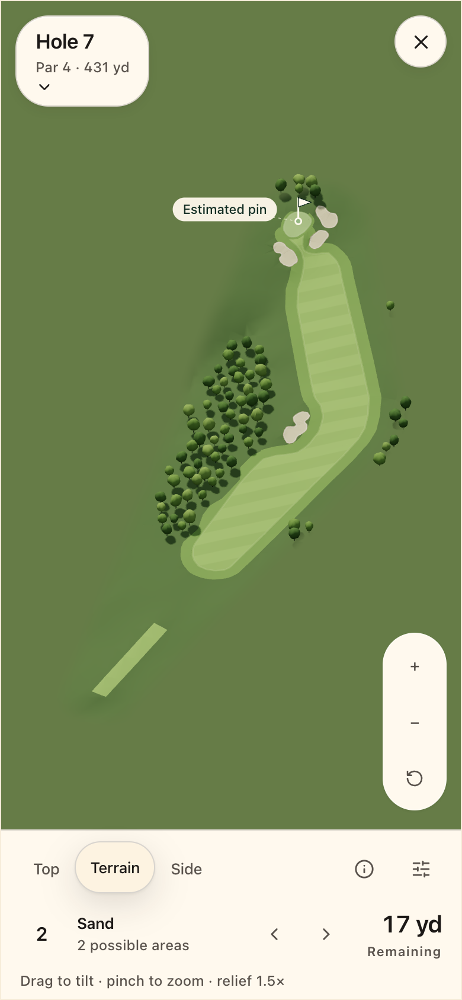
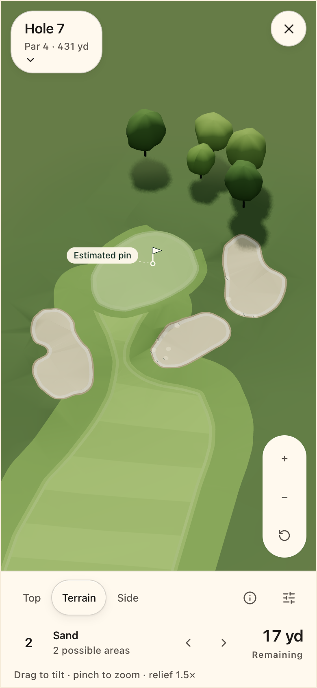
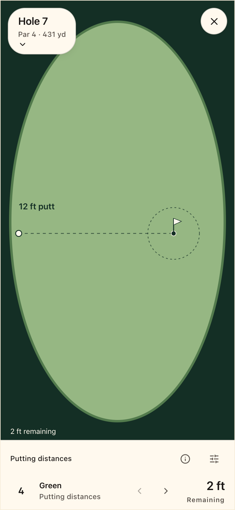
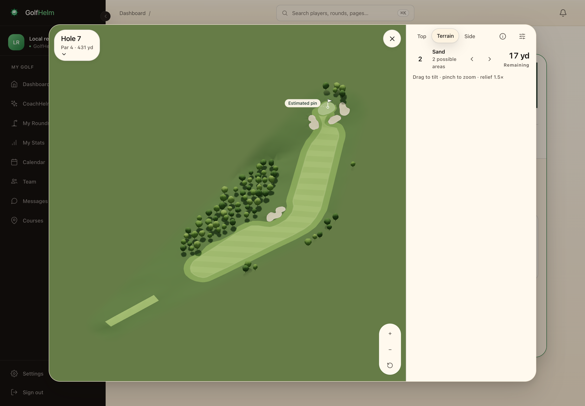
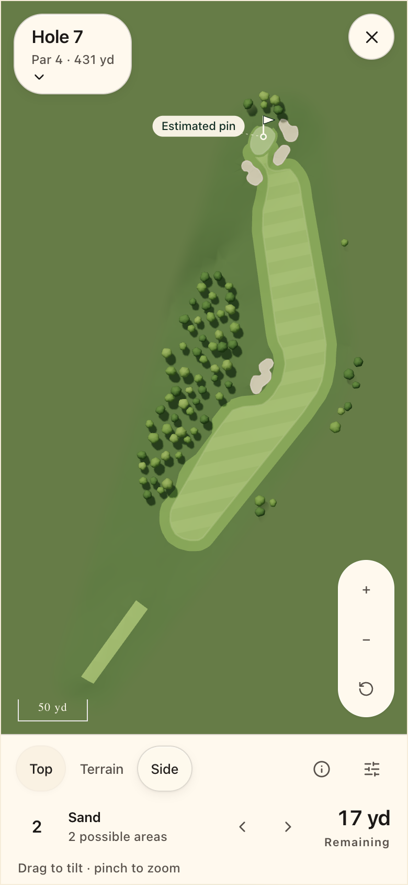
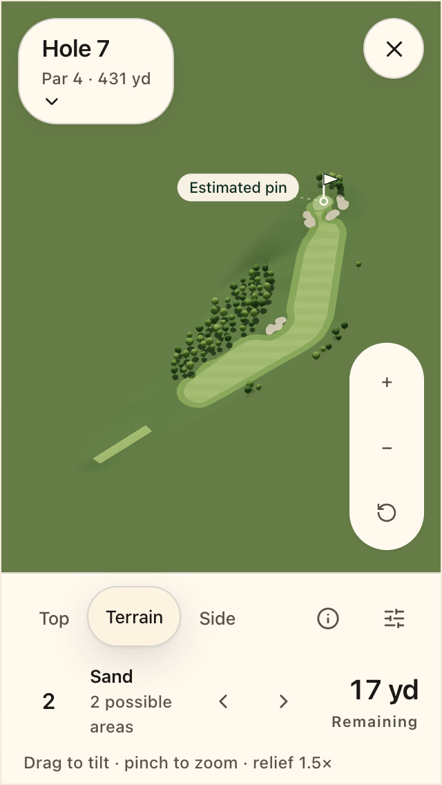

13 SEPTEMBER 2026 · FIRST LOCAL VERTICAL SLICEA course landscape inside GolfHelm.
Cacapon, hole 7. One Three.js terrain canvas with world-space mowing, opaque instanced trees and fixed directional shadows. The Fairway inspector sits below the phone landscape or beside it on desktop. These are real component captures from the isolated local app fixture.
The course package remains a partial reviewed draft. Tree placement and height are illustrative; the pin is estimated. Manual shot distances and outcomes remain the source of truth.

Whole hole · 390 × 844 CSS px
Green · same camera orientation
Putting · original feet and matching shot
Desktop · 320px right inspector

Top · same source geometry
Small phone · 320 × 568 CSS pxPreset transitions and interrupted orbitThe recorded desktop drag sampled 163 RAF intervals: median 10 ms, p95 12 ms, p99 12.1 ms. This is automation with video recording in Chromium 152 on a Mac mini M4. It does not establish GPU completion time or native phone performance.
Designed vector exports: Top SVG · Terrain SVG · Side SVG. Their shading approximates the live landscape; the files contain no embedded bitmap.
Verification data and explicit limitations · Implementation plan, sections 21–23
Remaining release evidence: accepted source QA, authenticated Next.js entry, physical iOS/Android performance, outdoor legibility and native offline force-close recovery. No production data or deployment changes were made.